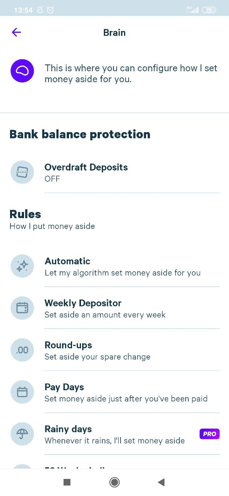

Enabling a Saver
First click on the "Brain" Button on your Homescreen

Next choose the saver you wish to enable. For this tutorial we choose the "Round-ups" Saver
Finally flip the toggle to enable the saver
Voila